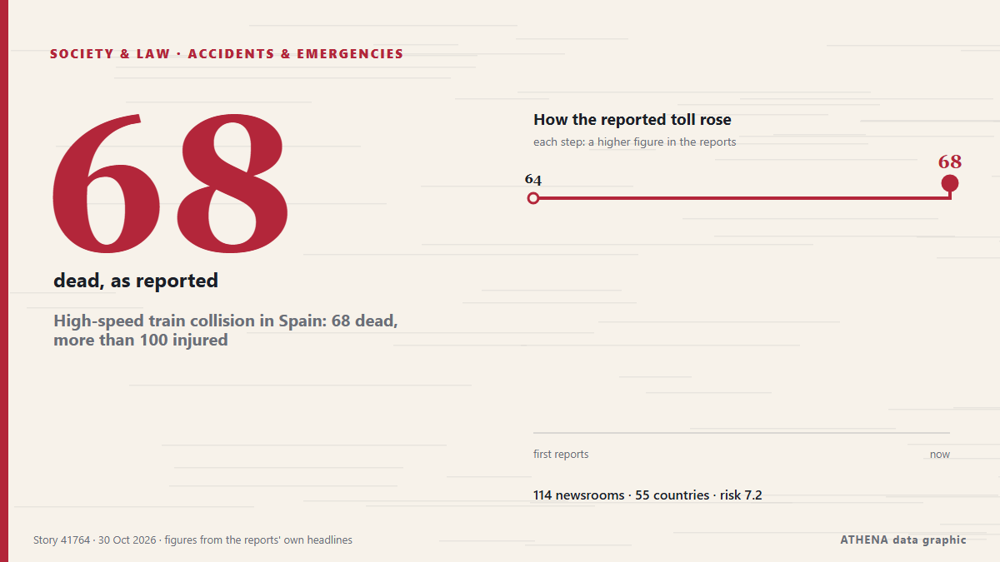

High-speed train collision in Spain: 68 dead, more than 100 injured

MADRID: At least 10 people have died after a major collision involving two high-speed passenger trains in the central Spanish province of Toledo.The accident prompted the suspensi... von Oman Observer
Unabhängig gemeldet von 115 Medien in 56 Ländern seit dem 28. Okt., zuerst von Oman Observer; die Berichterstattung flaut ab. ATHENA stuft das Risiko als hoch ein (7.1/10), vor allem wegen der Schwere des beschriebenen Schadens und seiner geografischen und sektoralen Reichweite. Die Konfidenz liegt bei 89 % (hoch): 115 Medien bestätigen es unabhängig, bei einer mittleren Verlässlichkeit der Quellen von 75 %. Medien nach Land: Vereinigtes Königreich (9), Irland (3), China (3). Berichterstattung: 28. Okt. bis 28. Okt., 4 Stunden.
Warum es wichtig ist: Rechtliche und politische Änderungen verändern Rechte, Pflichten und öffentliche Leistungen für die Betroffenen.
Was sich geändert hat: 19 neue Berichte von 17 Redaktionen in den 24 Stunden bis 30. Okt..
Erste Schlagzeile: At least 10 killed as 2 high-speed trains collide in Spain
Schlagzeilen werden auf Englisch angezeigt, wie veröffentlicht.
Auf einen Blick
Ausgewählt, bewertet und geschrieben nach der veröffentlichten Methodik von ATHENA. Kein Redakteur greift in einzelne Ereignisse ein. So entsteht ATHENA ›
| 28 Oct 05:34 UTC | 3 |
|---|---|
| 28 Oct 08:34 UTC | 108 |
| 28 Oct 11:34 UTC | 51 |
| 28 Oct 14:34 UTC | 28 |
| 28 Oct 17:34 UTC | 8 |
| 28 Oct 20:34 UTC | 5 |
| 28 Oct 23:34 UTC | 9 |
| 29 Oct 02:34 UTC | 3 |
| 29 Oct 05:34 UTC | 3 |
| 29 Oct 08:34 UTC | 5 |
| 29 Oct 11:34 UTC | 10 |
| 29 Oct 14:34 UTC | 6 |
| 29 Oct 17:34 UTC | 4 |
| 29 Oct 20:34 UTC | 0 |
| 29 Oct 23:34 UTC | 3 |
| 30 Oct 02:34 UTC | 0 |
| 30 Oct 05:34 UTC | 1 |
| 30 Oct 08:34 UTC | 0 |
| 30 Oct 11:34 UTC | 2 |
| 28 Oct 08:51 UTC | 2.0 |
|---|---|
| 28 Oct 09:19 UTC | 6.0 |
| 28 Oct 09:23 UTC | 7.5 |
| 28 Oct 14:27 UTC | 7.5 |
| 28 Oct 16:43 UTC | 8.3 |
| 28 Oct 18:41 UTC | 7.5 |
| 28 Oct 22:25 UTC | 8.3 |
| 28 Oct 23:20 UTC | 7.4 |
| 29 Oct 00:11 UTC | 8.1 |
| 29 Oct 15:01 UTC | 7.3 |
| 30 Oct 13:53 UTC | 7.1 |
Warum diese Zahlen
Bedeutung
Risiko
Konfidenz
Die Berichterstattung – wer berichtete, und wann
Schlagzeile wie veröffentlicht · öffnet das Original- Oman Observer · Oman64 die as two high-speed trains collide in Spain
- Express Tribune · PakistanAt least 68 dead in Spain's second major train crash this year
- The Straits Times · SingapurAt least 68 people dead in Spain’s second major train crash this year
- The Olive Press · SpanienToledo train crash round-up: At least 68 dead in Spain’s worst rail disaster since 2013
- RTÉ News · IrlandAt least 68 dead after two trains crash in Spain
- The Straits Times · SingapurTwo high-speed trains collide in Spain, rail operator says
- Cyprus Mail · ZypernAt least 30 people killed in Spain when two high-speed trains collide
- Sky News (World) · Vereinigtes Königreich'Numerous injuries' reported after high-speed rail crash in Spain
- France 24 English · Frankreich🔴 Death toll from train collision in central Spain rises to 64, regional government says
- Xinhua (English) — page reader · ChinaUrgent: Two trains collide in Spain, halting high-speed rail traffic on Madrid-Andalusia line
- Anadolu Agency (English) · TürkeiMadrid-Andalusia high-speed rail service disrupted after 2 trains collide
- APA (English) · AserbaidschanAt least 10 dead in train collision near Toledo, Spain, government confirms
- Indian Express · IndienSpain train crash | ‘Suddenly felt very strong jolt’: 68 killed in high-speed train collision
- to vima · GriechenlandAt Least 64 Dead in Collision of High-Speed Trains in Spain
- DW English · DeutschlandDozens of people killed after high-speed trains collide in central Spain
- CBS News (World) · Vereinigte StaatenHigh-speed train crash in Spain kills at least 68, dozens injured
- TheJournal.ie · IrlandTwo high-speed trains crash in Spain, leaving at least 68 people dead
- The Independent · Vereinigtes KönigreichSpain train crash latest: Police interview control centre staff over ‘inexplicable human error’ after 68 dead
- Al Jazeera English · KatarTrain collision in Spain kills at least 30 people
- The Guardian · Vereinigtes KönigreichSpain’s Sánchez declares three days of mourning after at least 68 killed in Toledo train crash
- Irish Examiner · IrlandSpain declares three days of mourning after at least 68 killed in train crash
- Anadolu Agency (English) · TürkeiDozens killed in high-speed train crash in central Spain
- APA (English) · AserbaidschanDeath toll from high-speed train collision in Spain rises to 46 - UPDATED-1 - VIDEO
- The Local Spain · SpanienLATEST: Spain train crash death toll soars to 68
- Türkiye Today · TürkeiAt least 10 killed as 2 high-speed trains collide in Spain
- Manchester Evening News · Vereinigtes KönigreichSpain high-speed train crash kills at least 39 people
- Asharq Al-Awsat (English) · Saudi-ArabienSpain High-Speed Train Crash Kills 68, Injures Over 100
- WalesOnline · Vereinigtes Königreich46 people killed in high-speed train collision in Spain
- Xinhua (English) — page reader · ChinaFlash: Death toll in Spain train collision rises to 39 -- media
- Chronicle Live (Newcastle) · Vereinigtes KönigreichSpain train crash leaves 'at least 46 dead' as high-speed locomotives collide
- Times of India · IndienAt least 50 dead as high-speed train rams another in Spain; videos show gutted carriages
- Gulf News · Vereinigte Arabische EmirateSpain high-speed train crash kills 68, injures over 100
- The Guardian · Vereinigtes KönigreichDeath toll rises to 68 with dozens injured after high-speed train collision in Spain – as it happened
- NBC News (World) · Vereinigte StaatenSpain train crash leaves at least 68 dead in second major collision this year
- Xinhua (English) — page reader · ChinaFlash: At least 46 killed in Spain train collision -- media
- Luxembourg Times · LuxemburgSpain high-speed train collision kills 64, injures over 100
- The Irish News (Belfast) · Vereinigtes KönigreichAt least 10 people dead in crash between two trains in Spain
- Belfast Telegraph · Vereinigtes KönigreichAt least 30 people dead in crash between two trains in Spain
- The National · Vereinigte Arabische EmirateAt least 68 killed in Spain in two-train crash
- SABC News · SüdafrikaTwo high-speed trains collide in Spain, at least 10 dead